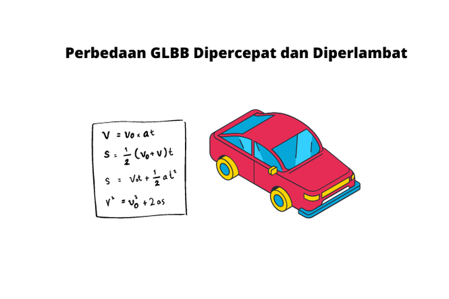

Gerak Lurus Berubah Beraturan (GLBB)

GLBB adalah jenis gerak yang memiliki percepatan konstan. Persamaan dasar GLBB meliputi:
- Kecepatan akhir: v = v0 + at
- Posisi akhir: x = x0 + v0t + 0.5at²
- Percepatan konstan: a
Contoh Soal
Sebuah mobil bergerak dengan kecepatan awal 10 m/s dan dipercepat dengan percepatan 2 m/s² selama 5 detik. Tentukan kecepatan akhir mobil!
Jawaban: v = v0 + at = 10 + 2(5) = 20 m/s.
Hukum Newton tentang Gerak
Hukum Newton menjelaskan hubungan antara gaya dan gerak objek. Hukum-hukum ini adalah dasar dari mekanika klasik:
- Hukum 1 (Inersia): Setiap benda akan tetap diam atau bergerak lurus beraturan jika tidak ada gaya luar yang bekerja padanya.
- Hukum 2: Percepatan benda sebanding dengan gaya total yang bekerja padanya dan berbanding terbalik dengan massanya (F = ma).
- Hukum 3: Setiap gaya aksi memiliki gaya reaksi yang sama besar dan berlawanan arah.